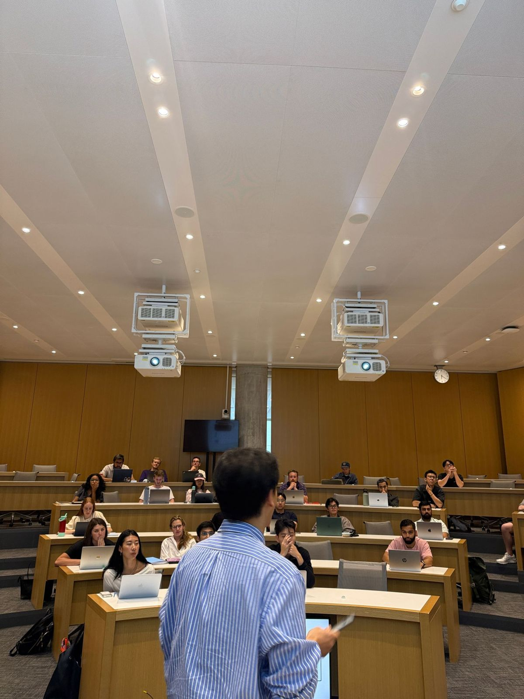
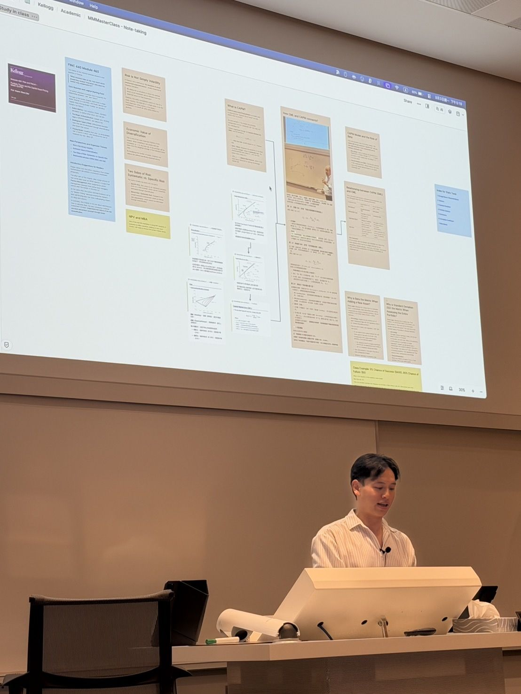

Henry Yang
楊欣融 Henry Yang
The Builder Who Turns
Chaos Into Calm
把混亂
打造成平靜
I build the systems that gave me my life back, so other people can have theirs.
我打造那些讓我拿回生活的系統，好讓別人也能拿回他們的。
About Henry
關於 Henry
I've believed the same thing since I was seventeen: technology should make people more capable, not more busy. It's why I left Taiwan for Hong Kong, joined Microsoft, and am now pursuing a dual MBA + MS in Design Innovation at Kellogg. My focus remains unchanged: building intuitive systems that restore balance and give people their time back.
從十七歲到現在，我相信的事情沒變過：科技應該讓人更有能力，而不是更忙。這是我離開台灣去香港、進 Microsoft，現在在 Kellogg 讀 MBA 與設計創新雙學位的原因。焦點始終如一：打造直覺好用的系統，把平衡和時間還給人。
I'm a Builder. Storyteller. Tech Instructor. Épée fencer. Productivity Tool Obsessive. RPG Gamer. Podcaster. Keynote Speaker. Five Language Communicator.
建造者。說故事的人。技術講師。重劍擊劍手。生產力工具偏執狂。RPG 玩家。Podcaster。Keynote 講者。能用五種語言溝通。
Fun fact My email inbox is at zero right now. It always is. Not because I'm tidy, but because the system I built helps me stay clear for work that matters.
冷知識 我的收件匣現在是零封。它一直都是。不是因為我愛整潔，而是因為我建的系統讓我能把腦袋留給真正重要的事。
Areas of interest
關注的領域
- Innovation where needs meet tech
- 需求與科技交會處的創新
- Building tools that lower cognitive load
- 打造降低認知負荷的工具
- Human centered AI adoption
- 以人為本的 AI 導入
- 3D Printing & Gadgets
- 3D 列印與各種小工具
Making technology feel human
讓科技貼近人
Storyteller who reads every room
能讀懂每一個場子的說書人
At the 2026 Microsoft AI Tour, I shared the keynote stage with Judson Althoff, Microsoft's CEO of Commercial Business, across Shanghai and Hong Kong: three languages, 6,000+ in the room, 400k+ views. I meet every audience in their own language, because a system nobody understands helps no one.
2026 Microsoft AI Tour，我在上海與香港和 Microsoft 商業事業群執行長 Judson Althoff 同台 keynote：三種語言、現場 6,000+ 人、400k+ 觀看。我用每一群聽眾自己的語言跟他們說話，因為沒有人聽得懂的系統，幫不了任何人。
The tool raised me, then hired me
是工具把我帶大的，後來它雇用了我
The kid who fixed his high school's inventory chaos with a shared Excel spreadsheet grew up to specialize in the productivity tools themselves: Excel, Teams, Microsoft 365, Copilot. Ten years, one obsession.
那個用一份共用 Excel 收拾掉高中庫存混亂的小孩，長大後專門做生產力工具本身：Excel、Teams、Microsoft 365、Copilot。十年，同一個執念。
A builder, not just a talker
做的人，不是只會講的人
I don't just advocate for productivity tech — I build it and live by it. From personal AI agents and second-brain workflows to a custom Vibe Coding controller app and a tech podcast for new grads that reached the top 15 in Hong Kong, every system I teach is one I've battle-tested myself.
我不只是提倡生產力科技 —— 我自己做，也自己用。從個人 AI agent、第二大腦工作流，到自己寫的 Vibe Coding 控制器 app，再到一檔給新鮮人的科技 Podcast（在香港衝到前 15 名），我教的每一套系統，都是我自己先操過一輪的。
Henry delivers more than content. He listens, adapts, and makes others feel included in the conversation.
「Henry 給的不只是內容。他會聽、會調整，讓每個人都覺得自己在這場對話裡。」
Projects 專案 The recent projects I’m doing 最近在做的事 2 items
I teach: AI productivity and how to take notes to make knowledge compound
我在教：AI 生產力，以及怎麼記筆記讓知識累積成複利
How to take notes that help you think — and connect ideas across every subject.
怎麼記下能幫你思考的筆記 — 並且讓不同領域的想法互相連起來。
From the room
現場


I built: ClaudeGamepad — vibe coding with a game controller
我做了：ClaudeGamepad — 用遊戲手把 vibe coding
A native macOS menu bar app that lets you control Claude Code with a game controller. Lean back, plug in, and vibe code — hands off the keyboard, eyes still on the terminal.
一個原生 macOS 選單列 app，讓你用遊戲手把控制 Claude Code。往後靠、接上手把、開始 vibe coding — 手離開鍵盤，眼睛還在 terminal 上。
Native Swift + AppKit. No Electron, no Python. Xbox, PS5 and MFi controllers on macOS 14+.
原生 Swift + AppKit。沒有 Electron，沒有 Python。支援 macOS 14+ 的 Xbox、PS5 與 MFi 手把。